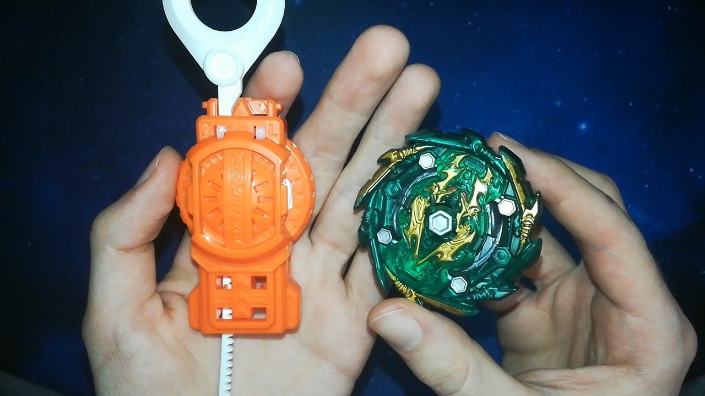
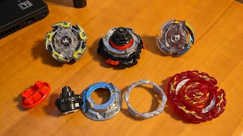

Today, Beyblades remain hugely popular, with fans from the early 2000s and a new generation of enthusiasts joining in on the excitement. The latest series, Beyblade Burst, has expanded the universe with updated designs, new characters in the anime, and even more thrilling tournament-style battles. Beyblade events and tournaments continue worldwide, with fans customizing their Beyblades for intense competitions, both for fun and at high-level championships. The online Beyblade community is thriving, with players sharing battle tips, modifications, and strategies to optimize performance.
How to Use Beyblades: Basics 1. Assemble Your Beyblade: Beyblades consist of three main parts: the Energy Layer (the top part that often features cool designs), the Forge Disc (adds weight and impacts performance), and the Performance Tip (determines the spin behavior). Once you have your parts, twist them together until they click. 2. Launch with a Launcher: Beyblades are launched using a ripcord or string launcher. Attach your Beyblade to the launcher, then pull the ripcord or string quickly and smoothly while aiming into the stadium. The speed and angle of the launch can influence the outcome of the battle, so experiment with your technique! 3. Battle in a Beystadium: The goal is to knock your opponent’s Beyblade out of the stadium, burst it, or outlast it in spin time. Attack, defense, and stamina types each have strengths and weaknesses, making each battle unique. Customize your Bey to match your style and strategy! With these basics in mind, you’re ready to let it rip and jump into the world of Beyblade battles!
 